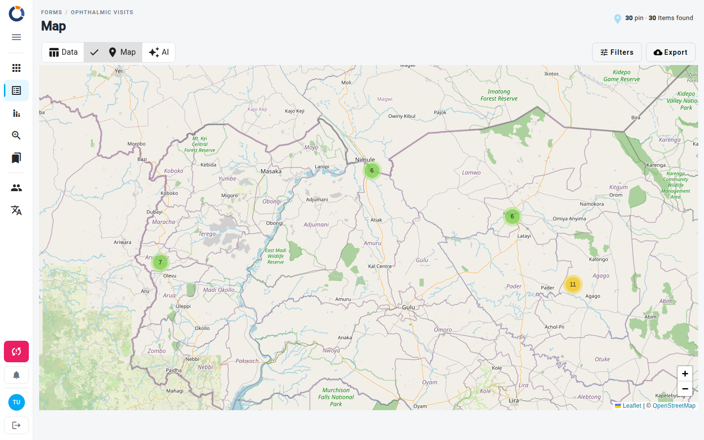

Mapa de Formulários
A página Mapa de Formulários apresenta os dados dos seus formulários num mapa interativo, permitindo-lhe visualizar a informação geograficamente. Pode filtrar os dados por data e por campos de dados específicos para se concentrar na informação de que necessita.
Esta página só está disponível se a métrica de posição estiver ativa no form schema. Além disso, cada posição tem de ter as suas coordenadas preenchidas.

A página é composta por duas áreas principais:
- O Mapa: Um mapa interativo que mostra marcadores agrupados para cada conjunto de dados. Cada marcador é colocado com base nos dados de posição dos dados.
- A Barra de Filtros: Um conjunto de controlos no topo da página para filtrar os dados apresentados no mapa.
No topo da página, um contador mostra quantos pinos estão atualmente plotados e quantos itens foram encontrados pelos filtros ativos.
Alternar entre visualizações
Utilize os botões Dados, Mapa e IA na barra de ferramentas para alternar entre a tabela, o mapa e o Datachat para o mesmo form schema. O botão Mapa só está ativo quando a métrica de posição está ativa.
Ver os detalhes dos dados
Cada marcador no mapa representa um ou mais conjuntos de dados numa posição específica.
- Clique num marcador para abrir a respetiva janela.
- A janela apresenta o nome da posição seguido dos valores das colunas de dados que tem visíveis para este form.
- Quando vários conjuntos de dados partilham a mesma posição, os marcadores são agrupados num cluster. Clique no cluster para ampliar até aparecerem os marcadores individuais.
Filtrar os dados no mapa
Utilize os filtros para restringir os dados que aparecem no mapa. A maioria encontra-se na caixa de diálogo Filtros: clique em Filtros na barra de ferramentas para a abrir, defina os filtros no separador Simples e clique em Pesquisar para os aplicar.
1. Filtrar por intervalo de datas
- Na caixa de diálogo Filtros, clique no ícone de calendário do campo Data inicial.
- Selecione uma data de início.
- Repita para o campo Até à data para definir o fim do intervalo.
2. Filtrar por campos de dados
Abaixo dos campos de data, o separador Simples mostra vários campos de introdução. Cada campo corresponde a uma coluna de dados do seu form (por exemplo, "Ponto de atendimento" ou "Nacionalidade") e pode também incluir campos de estado, utilizador, posição, área, caso, organização ou projeto.
- Clique em qualquer campo (por exemplo, "Nacionalidade").
- Comece a escrever. Aparece uma lista pendente com os valores correspondentes dos seus dados existentes.
- Selecione um valor da lista ou escreva o seu próprio texto para filtrar os dados que contenham esse texto.
- Para limpar um filtro, clique no ícone X que aparece dentro do campo.
Para campos que aceitam mais do que um valor, pode assinalar várias opções na lista pendente antes de a fechar.
Utilizar vários filtros
Pode aplicar filtros em vários campos ao mesmo tempo. O mapa só mostra os dados que correspondem a todos os critérios de filtro ativos.
3. Utilizar filtros avançados
- Clique em Filtros na barra de ferramentas para abrir a caixa de diálogo de filtros.
- Mude para o separador Avançado para criar condições precisas, escolhendo o campo, o operador e o valor, e depois clique em Criar Filtro.
- Utilize Todos ou Qualquer para decidir se os dados têm de corresponder a todas as condições ou a pelo menos uma.
- Clique em Pesquisar para aplicar as suas condições, ou em Repor os filtros para começar de novo.
Os filtros aplicados aparecem como etiquetas abaixo da barra de ferramentas. Clique no ícone cancelar de uma etiqueta para remover esse filtro específico.
4. Guardar e reutilizar filtros
Se filtrar este form com frequência, pode guardar as suas definições como predefinição na caixa de diálogo Filtros. Os controlos de predefinições não aparecem em ecrãs pequenos.
- Escreva um nome no campo Escolha um nome de predefinição.
- Clique em Salvar para guardar a seleção atual de filtros.
- Mais tarde, escolha a predefinição da lista e clique em Aplicar para a restaurar.
5. Exportar os resultados
- Clique em Exportar na barra de ferramentas.
- Escolha o formato de exportação e as colunas que pretende incluir.
- Confirme para transferir um ficheiro com os dados atualmente filtrados.
Dados de posição necessários
Os dados só podem aparecer no mapa se tiverem coordenadas geográficas válidas associadas à sua posição. Os dados sem esta informação não são apresentados nem contados entre os pinos plotados.